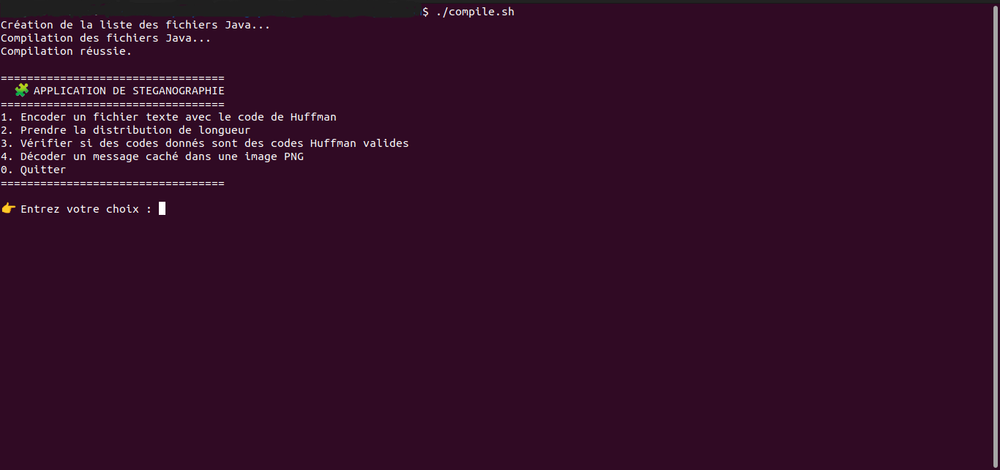
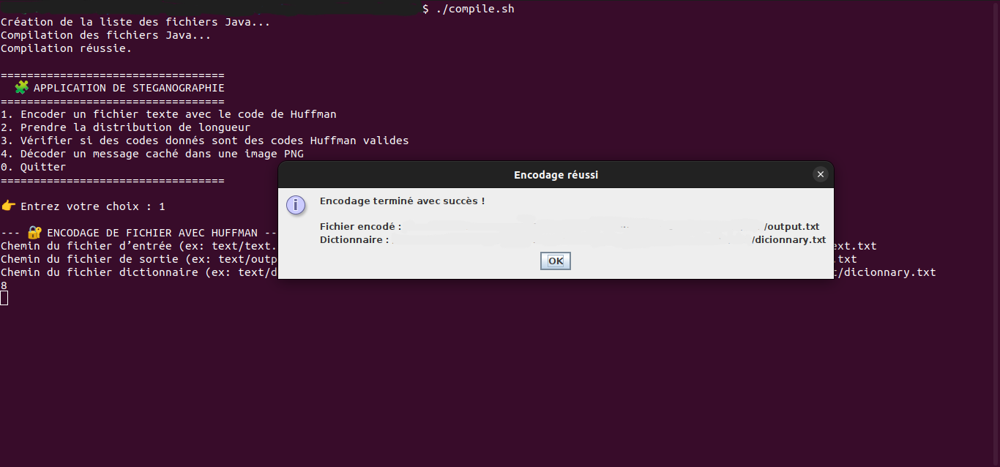
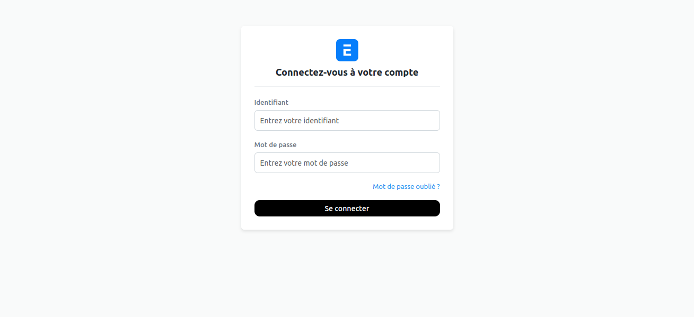
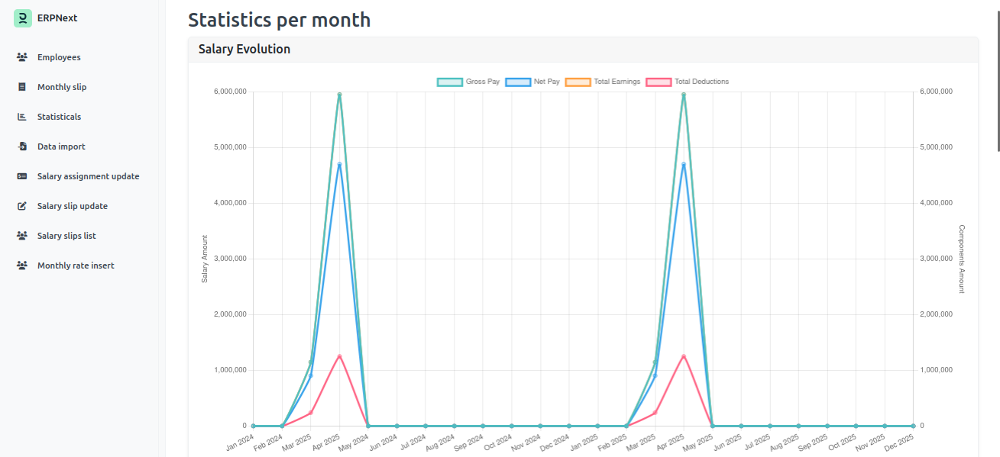
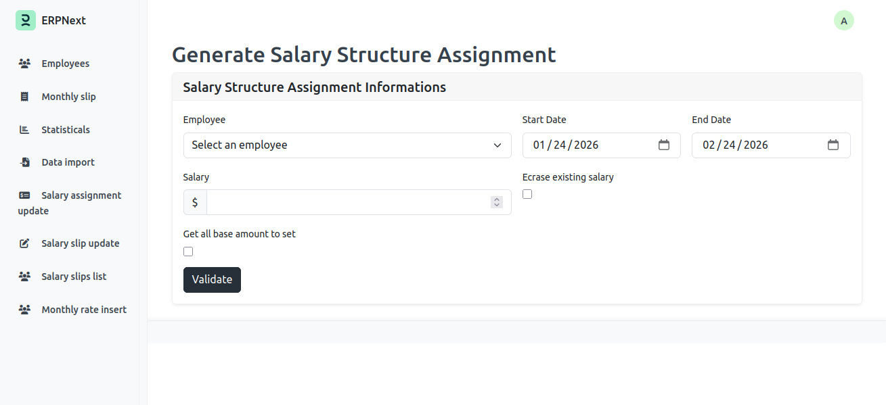
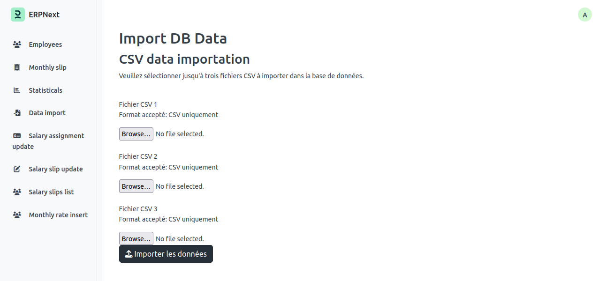
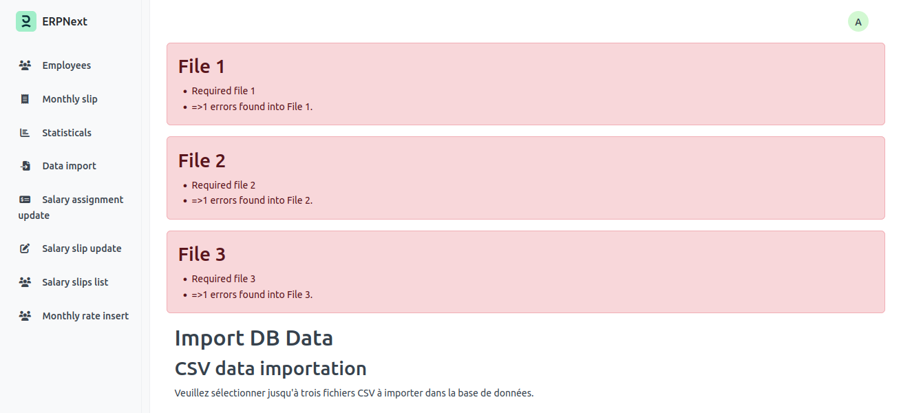
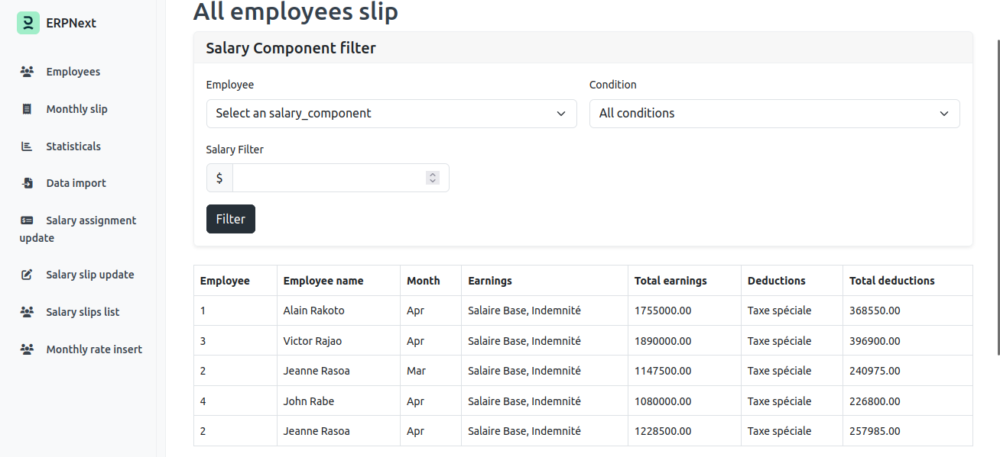
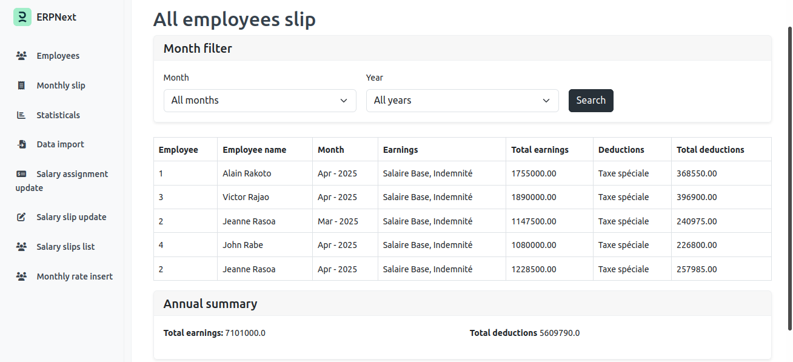

Passionné de l'informatique, dans le développement web et logiciels, j'aime concevoir et créer des outils qui généralisent et automatisent les tâches répétitives des utilisateurs.
Projets
Projets d'étude
Application web de gestion pour une agence de voyage (Abeona)
Concepteur, Développeur back-end (Java), Intégrateur
Il s'agit d'un projet d'étude fonctionnel nommé "Abeona" qui peut planifier les séjours des voyageurs tant du niveau national qu'international.
Fonctionnalités Admin
Statistique d'évolution des revenus
Statistique d'évolution du nombre de clients inscrits
Statistique du nombre de partenaires inscrits
Validation demande d'inscription d'un partenaire (Hôtel, Transport, ...)
Fonctionnalités Client
Affichage du calendrier des événements dans une région
Demande proposition de pack par rapport au budget et nombre de personnes
Choix de préférence
Liste des attractions disponibles
Évaluation des services et destinations
Vérification de la disponibilité des partenaires
Réservation des partenaires (Hôtel, Transport, Guide)
Recherche de destinations
Insertion d'avis ou commentaire à propos des partenaires
Fonctionnalités Partenaire
Mise à jour de la disponibilité
Statistique d'évolution du nombre de clients ayant réservé
Statistique de revenu
Mini-framework MVC
Développeur front-end (JSP) et back-end (Java)
Un framework fait maison s'inspirant de Java Spring-Boot où l'on a essayé d'inclure toutes les fonctionnalités principales d'un framework utilisable directement pour une application web MVC.
Fonctionnalités principales
Détection automatique des classes (Controller) annotées
Détection automatique des méthodes annotées
Détection automatique de classe et méthode associée à l'URL
Appel de méthode selon méthode (GET ou POST)
Redirection dans un View ou affichage du retour de la méthode
Appel de fonction avec paramètres annotés
Possibilité d'envoi d'objet dans un formulaire
Gestion des sessions des utilisateurs
Exposition de retour de fonction en JSON
Upload fichier
Export PDF
Application de stéganographie
Développeur back-end (Java)
Application de stéganographie qui a pour but de communiquer en message codé à travers une image ou un son.
Aperçu de l'application

Menu principal avec options de cachage et lecture de messages

Décodage de message binaire utilisant l'algorithme de Huffman
Capacités de l'application
Cacher un message binaire dans une image JPG
(Voir interface principale)
Lire un message binaire caché dans une image JPG
(Voir interface principale)
Cacher un message binaire dans un son WAV
(Voir interface principale)
Lire un message binaire caché dans un son WAV
(Voir interface principale)
Décoder un message binaire en utilisant le codage de Huffman
(Voir décodage Huffman)
HAProxy Manager
Développeur back-end (Codeigniter) et front-end (HTML + CSS + JS)
Application web permettant de gérer dynamiquement la configuration de l'application HAProxy
via une interface graphique. L’outil permet de modifier les différentes
sections du fichier haproxy.cfg et d’appliquer les changements
automatiquement en redémarrant le service HAProxy.
Section GLOBAL
Ajout de nouvelles lignes de logs (chemin, nom, niveau)
Suppression sélective des logs existants
Modification du nom et du niveau des logs
Gestion directe de la section
global du fichier haproxy.cfgSection FRONTEND HTTP
Modification du mode (HTTP, HTTPS, etc.)
Configuration des options du frontend
Modification du port d’écoute (bind, par défaut 80)
Sélection du backend par défaut
Application des changements à la section
frontend http_frontSection BACKEND HTTP
Modification du mode de fonctionnement
Choix de l’algorithme de load balancing (round-robin, leastconn, etc.)
Ajout de nouveaux serveurs backend
Modification des serveurs existants (adresse, options de vérification)
Suppression de serveurs backend
Gestion de la section
backend http_backCaractéristiques générales
Interface web basée sur Bootstrap 5
Affichage en temps réel de la configuration HAProxy
Rechargement automatique de HAProxy après chaque modification
Gestion des erreurs avec messages de feedback
Formulaires côte à côte pour comparer configuration et édition
Modification directe du fichier
/etc/haproxy/haproxy.cfg
Système de gestion salariale connectée à l’application ERPNext
Développeur back-end (Api REST & Java Spring Boot) et front-end (HTML & CSS & Thymeleaf)
Système de gestion des salaires intégré à ERPNext, permettant la gestion avancée et suivi des paiements salariales en dehors du module standard existant dans ERPNext.
Aperçu de l'application

Interface d'authentification connectée à ERPNext

Tableau de bord avec visualisations avancées
Fonctionnalités principales
Système d'authentification connecté et dépendant à l'application ERPNext
(Voir interface d'authentification)
Génération automatique des fiches de paie des employés
(Voir captures 2 & 3 ci-dessous)
Exportation des fiches de paie au format PDF
(Voir capture 3 ci-dessous)
Tableau de bord des statistiques de paie
(Voir tableau de bord ci-dessus)
Système d'importation de données (fichier CSV) avec validation préalable
(Voir captures 5 & 6 ci-dessous)
Captures d'écran détaillées

Génération fiches de paie - Sélection employés

Génération fiches de paie - Prévisualisation PDF

Importation données - Sélection fichier CSV

Importation données - Validation des données

Interface de gestion des employés et salaires

Détails et historique des fiches de paie
Projet personnel
Site web de gestion de dépenses journalières
Concepteur, développeur (back-end et front-end)
C'est un site qui gère tous les genres de dépenses du quotidien en nous donnant les chiffres d'affaires et les bénéfices pour une production donnée et pour plusieurs dépenses.
Gestion de Production
Insertion de production avec les chiffres d'affaires et les dépenses liées
Bilan de production (dépenses, chiffre d'affaires, bénéfices, pertes)
Tableau de bord de production
Analyse des Dépenses
Bilan de dépenses pour une production
Évolution graphique des dépenses liées à une ou plusieurs productions